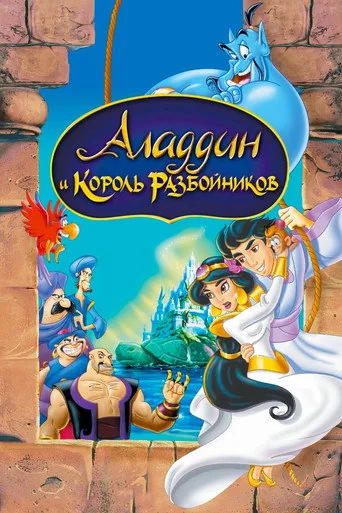

Аладдин и Король Разбойников 1996
Все жители Аграбы дружно готовятся к величайшему празднику — вот-вот состоится долгожданная свадьба Аладдина и принцессы Жасмин! Но сначала нашему герою придется остановить легендарную шайку сорока разбойников — ведь они хотят похитить свадебный подарок — всевидящего Оракула, с помощью которого злодеи хотят отыскать и прибрать к своим рукам все сокровища мира. Аладдину и его неразлучным друзьям — Жасмин, Абу, Коврику и весельчаку Джинну придется пережить немало приключений и найти выход из самых безвыходных ситуаций в погоне за Королем Разбойников и его удалой безжалостной шайкой.
Открыть в каталогеДанные и постеры принадлежат их правообладателям. Этот продукт использует TMDB API, но не одобрен и не сертифицирован TMDB.